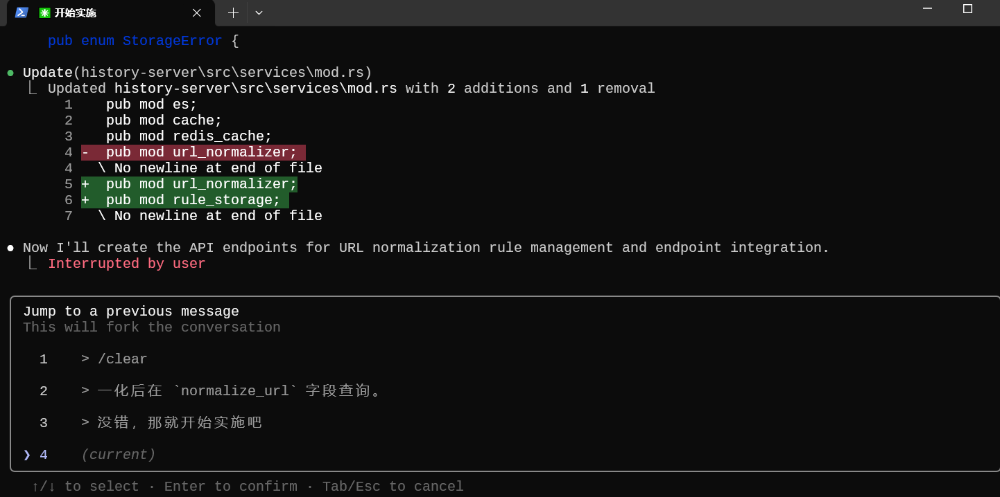

Claude Code使用记录

小技巧
1. 切换聊天记录位置
在输入框处，连续按下两次ESC（运行时不要轻易使用，ESC会中止当前任务运行）即可选择跳转到之前的消息，并且新开一个分支进行开发。
这样当你输入了错误的信息想回退时，就可以切换到目标位置了。而不需要/clear掉全部聊天记录。
在/compact后，似乎已经回不去以前的记录了。

- Post title：Claude Code使用记录
- Post author：QBug
- Create time：2025-08-18 00:13:52
- Post link：https://q-bug4.github.io/2025/08/18/Claude-Code使用记录/
- Copyright Notice：All articles in this blog are licensed under BY-NC-SA unless stating additionally.